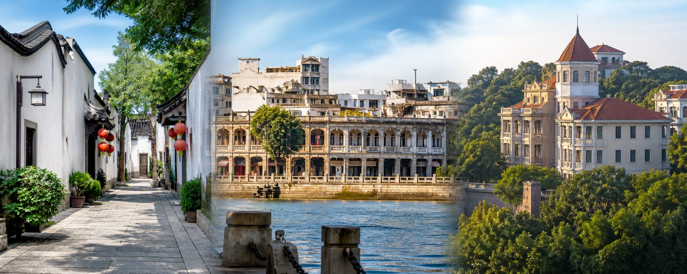
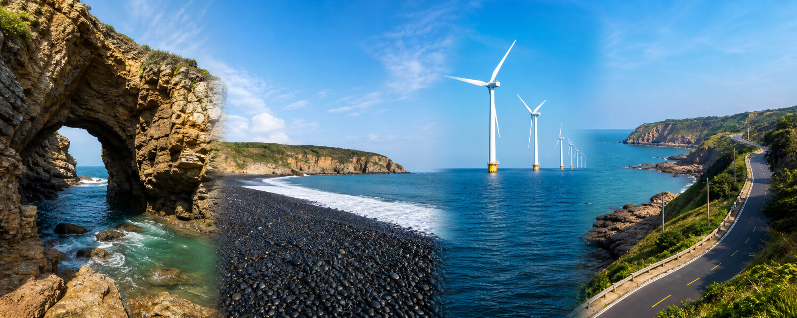

两车出行提醒
两车分别导航同一地点，提前约定服务区、景区停车场和住宿的集合位置。
8月13日 · 福州
补觉到11:30，再走三坊七巷、上下杭和烟台山

1
落地福州 → 全季上三路店
直接打车约50–60分钟；订单为8月12日房晚，并提前报备凌晨入住。
2
入住补觉
全季酒店（福州烟台山公园上三路店），当晚继续连住。
3
三坊七巷附近午餐
肉燕、鱼丸、荔枝肉、芋泥；跨片区全部打车。
4
三坊七巷核心段
南后街、衣锦坊/文儒坊、名人故居，不做每馆深度游。
5
上下杭历史街区
主街和河沿短线，控制70分钟。
6
烟台山建筑街区
乐群路、石厝教堂、爱国路核心段。
7
回酒店休息、晚餐
确认第二天取车门店，两车使用相同导航地点。
8月14日 · 平潭
两车同行，完整游览平潭北线

1
早餐退房 → 取车
租车只计一辆；两车互存车牌、司机电话和停车目标。
2
福州 → 观岚海景民宿
两车按订单内准确定位导航，并约定途中集合点。
3
东海仙境 → 北港村
海边注意防滑；北港短停，不做长时间旅拍。
4
午餐 → 磹水/镜沙/沙地底
海鲜先问单价；潮汐或风浪不合适时只在观景点看。
5
长江澳 → 北部湾日落
两车停同一正规停车场，单行与接驳以现场组织为准。
6
回观岚海景民宿 + 晚餐
确认两辆车停车位置和次日清晨出入方式。
8月15日 · 平潭 → 厦门
龙王头、猴研岛，下午鼓浪屿，晚上八市和沙坡尾
1
民宿 → 龙王头日出 → 早餐退房
观岚位于龙王头片区；阴雨天早餐后出发。
2
68海里·猴研岛
风浪大听现场安排，两车停同一停车区。
3
平潭 → 厦门双子塔
途中设一个服务区集合点；抵达后确认两车过夜停车。
4
打车到厦鼓码头 → 三丘田
目标15:30–15:50船班，提前候船。
5
鼓浪屿半日核心线
最美转角、建筑群、日光岩可选、三丘田；付费点只选一个。
6
三丘田夜航 → 厦门轮渡码头
夏季夜航约7分钟，按票面和现场安排乘船。
7
八市周边海鲜
市场可能已收摊，吃周边排档；6人点菜适合共享。
8
回双子塔 → 沙坡尾夜游
沙坡尾就在住宿楼下，步行游览避风坞和艺术西区后回房休息。
8月16日 · 厦门 → 武汉
黄厝日出、椰风寨散步，返回双子塔退房
1
双子塔 → 海韵台·黄厝沙滩
两车自驾，停正规车位；阴雨天改06:20出发。
2
黄厝沙滩日出 + 散步
视野开阔，清晨相对安静；不下深水。
3
黄厝 → 椰风寨沙滩
沿环岛路向东，两车在同一停车点集合。
4
椰风寨沙滩散步
看海岸与退潮沙洲，避开未开放区域。
5
返回双子塔 → 早餐退房
早餐后整理行李并确认两车停车费。
6
两车前往厦门北附近还车点
租赁车辆先加油/充电，两车在门店汇合。
7
还车 → 厦门北站
另一辆车的停车或接送方式提前确认，13:15前进入候车区。
8
参考 D3278 厦门北 → 武汉
车次以12306票面为准；另一辆车返程另行安排。
住宿
已确定住宿
福州 · 已定全季酒店（福州烟台山公园上三路店）8月12–13日连住2晚
平潭 · 已定观岚海景民宿（平潭龙王头海滨度假区店）按订单定位导航，确认两车停车和清晨出入
厦门 · 已定世茂双子塔住宿确认办理地点、楼栋、电梯和两车停车
预算
6人总价与人均
经济型总计约 ¥9,000–13,700人均约 ¥1,500–2,300
舒适型总计约 ¥13,000–22,000人均约 ¥2,200–3,700